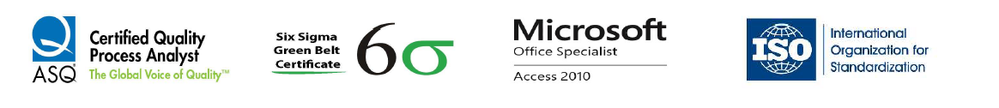

John Nagy Naguib Ayyad

Summary
I am a confident, results driven, influencer and ambitious Leader who, in recent years, has developed the mindset, qualities, skills and knowledge to be a high performing leader.
My Leadership style is a combination of motivational, transformational and delegative approaches, I am not afraid to make difficult decisions whenever needed.
Will ensure that every member of my team will conduct themselves in line with the company’s values and expectations.
Education
- Bachelor degree of Pharmacy: Ain Shams University in Cairo – Very Good Grade JUN 2011
- High School - Hafez Ibrahim Language School - General Secondary Grade. (98.7%). JUN 2006
Experience
Quality Control Intermediates & Finished Products Section Head
Minapharm Pharmaceuticals - Aug 2021 Till Now
Tasks:
- Leading, supervising and coaching Quality Control analysts, senior analysts and Experts in Chemical, Physical &
HPLC teams to ensure well understanding and adhering to internal, external requirements and products Quality
specifications.
- Responsible for developing and maintenance of electronic system including software building and validation.
(Currently system owner of Lab Integrated Management System “LIMS” for complete digital transformation)
- Measuring various KPI's and Analysis / Performance statistics.
Quality Control Finished Products Expert
Minapharm Pharmaceuticals JAN 2018 to JUL 2021 (3yrs. 7 mos.)
Quality Control Senior Specialist
Minapharm Pharmaceuticals JAN 2016 to DEC 2017 (2 yrs.)
Certificates

- Certified Quality Process Analyst “CQPA” - American Society for Quality “ASQ”
- Certified Green belt Six Sigma Project Team Leader - Minapharm Pharmaceuticals
- Certified Microsoft Office Access Specialist – Microsoft
- Certificate of training on ISO 9001:2015 (Quality), ISO 14001 (Environment), OHSA 18001 (Occupational
health and safety)
Skills
- Leadership
- Project Management
- Programming and Web developement
- Problem Solving
Interests
See my Interests
About me
Contact me